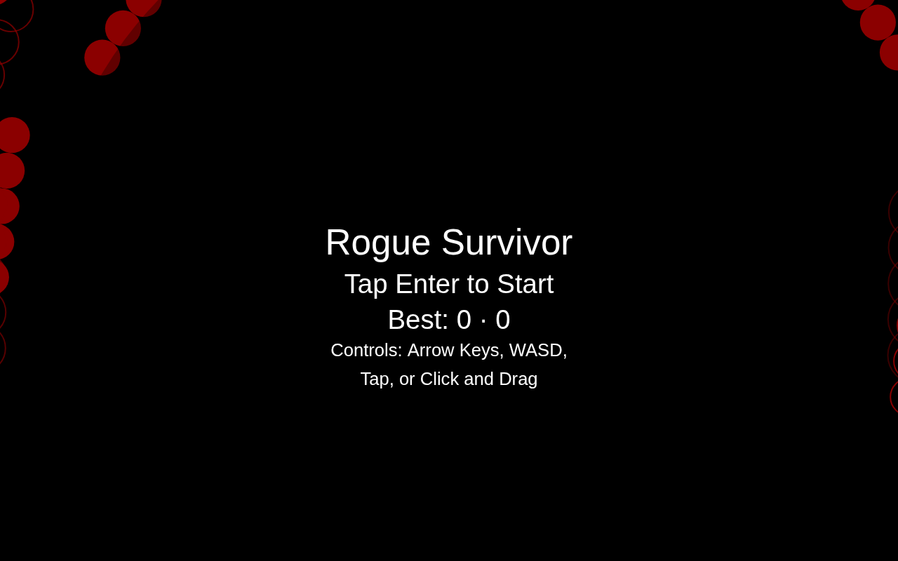
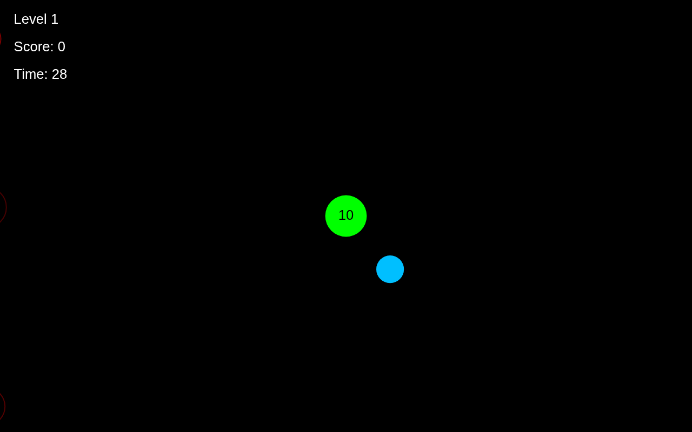

The base game forgot everything the second you closed the tab. Your best run? Gone. It made no sound, and enemies popped into existence already moving and already dangerous. This week fixed all three: spawn telegraphs, a persistent best score and time, and synthesized sound effects with zero audio files. The playable build is up top.
The week 4 build, frozen in time. Survive as long as you can. Your best score and best time now survive a page refresh.
Click the game once so it captures your keyboard and wakes the audio. Keyboard, mouse, gamepad, or touch drag all work.
Every spawn starts as a telegraph: a ring that shrinks and brightens for about half a second. While the ring shows, the enemy cannot move, cannot hurt you, and cannot be hurt. Getting hit is your mistake now, not the game's.
telegraphTicksThirty frames of warning, counted down in the enemy update. The ring's radius and alpha come straight from the countdown progress.
this.telegraphTicksLeft = CONFIG.enemy.telegraphTicks // 30 frames, ~0.5s
if (this.telegraphTicksLeft > 0) {
this.telegraphTicksLeft--
// inert: no movement, no collision, no damage either way
return
}
Best score and best time persist in localStorage under one key and show on the start screen and the game over screen. Score and time are tracked separately, so a long survival run and a high-score run both count. Every storage access is guarded: if the browser refuses, the game keeps the best in memory for the session instead of crashing.
recordBestScoreOne guarded write at game over. The load path validates both numbers before trusting them.
const BEST_SCORE_KEY = 'rogueSurvivorBest'
const recordBestScore = () => {
if (score <= bestScore && gameOverTime <= bestTime) return
bestScore = Math.max(bestScore, score)
bestTime = Math.max(bestTime, gameOverTime)
try {
window.localStorage.setItem(BEST_SCORE_KEY,
JSON.stringify({ score: bestScore, time: bestTime }))
} catch (error) {
// No writable storage: the in-memory best still shows this session.
}
}
The game is still one JavaScript file with no assets, so the sound is synthesized with WebAudio: an oscillator, a gain envelope, and a frequency ramp. Three tones cover the whole game. The context wakes on the first key press, click, or tap, which is the gesture that starts the game anyway.
playToneOne helper makes every sound in the game. A shield kill is a rising square blip, a hit is a falling sawtooth thud, game over is a long falling sweep.
const playTone = ({ frequency, endFrequency, duration, type, volume }) => {
const context = ensureAudioContext()
if (!context) return
const oscillator = context.createOscillator()
const gain = context.createGain()
oscillator.type = type
oscillator.frequency.setValueAtTime(frequency, context.currentTime)
if (endFrequency) {
oscillator.frequency.exponentialRampToValueAtTime(
endFrequency, context.currentTime + duration)
}
// gain envelope: in fast, out to silence
oscillator.connect(gain)
gain.connect(context.destination)
oscillator.start()
oscillator.stop(context.currentTime + duration)
}
const playShieldKillSound = () =>
playTone({ frequency: 620, endFrequency: 980, duration: 0.09,
type: 'square', volume: 0.05 })
The start screen now carries your best. The faint rings at the edges are telegraphs: spawns warning before they go live.

